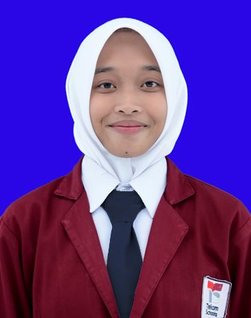

Nesya Pramudia Eko Putri

Saya adalah seorang anak pertama dari dua bersaudara. Saya tinggal di Pringsewu, tepatnya desa Pandan Sari, Kecamatan Sukoharjo, Kabupaten Pringsewu. Saya tinggal bersama kedua orang tua saya dan adik saya. Hobi saya adalah menonton podcast dan membaca. Saya juga termasuk orang yang dapat bekerja dalam tim.
Kontak
- Email: nesyapramudia@gmail.com
- No. WA: 085707737084
- LinkedIn: Profil LinkedIn Anda
Keahlian
- Pemrograman: Dapat menggunakan bahasa pemograman html
- Desain: Dapat menggunakan canva dan microsoft word
Bahasa
- Bahasa Indonesia: Lancar
- Bahasa Inggris: Sedang proses belajar
Pengalaman PKL
- Customer Service di Kandatel Telkom Pesawaran (2022)
- Memberi informasi kepada customer mengenai jadwal pembayaran, mencatat perkembangan wifi sesuai Mbps
Pengalaman Organisasi
- Formatif (2023- Sekarang)
- Anggota sie acara
- Sebagai panitia robotika 2024, yang bertanggung jawab dalam berjalannya games pada robotika hari kedua.
Riwayat Pendidikan
- SMK Telkom Lampung (2021-2023)
- Teknik Jaringan Akses Telekomunikasi
- Membuat kabel ethernet straight RJ45